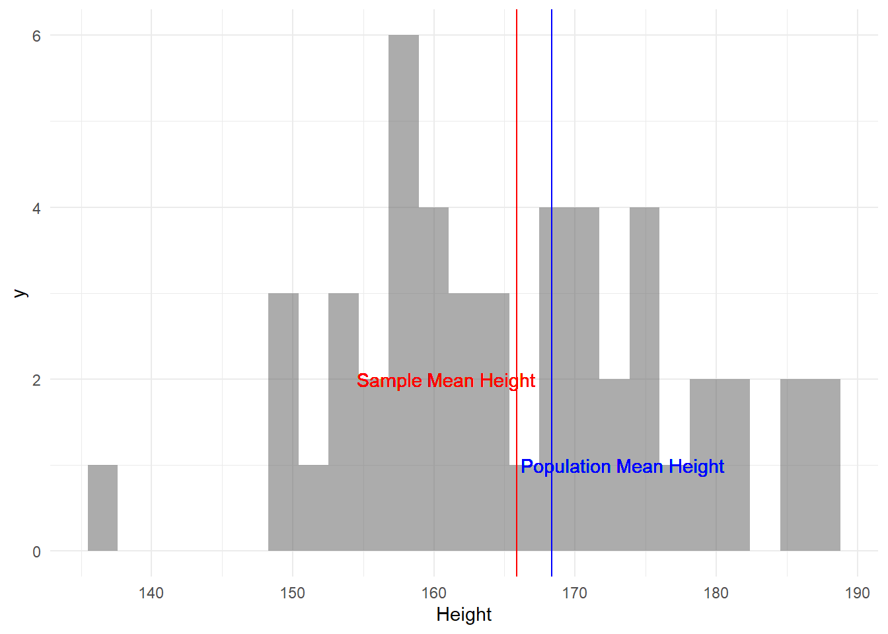
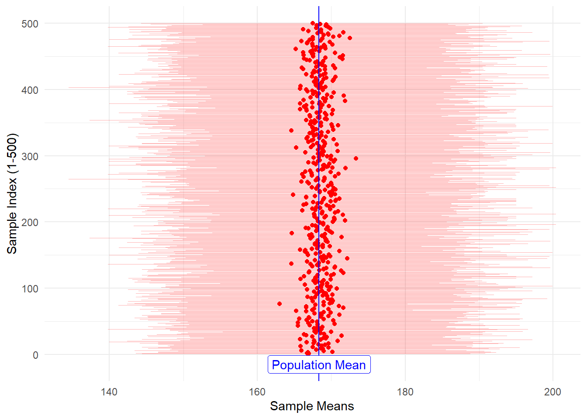
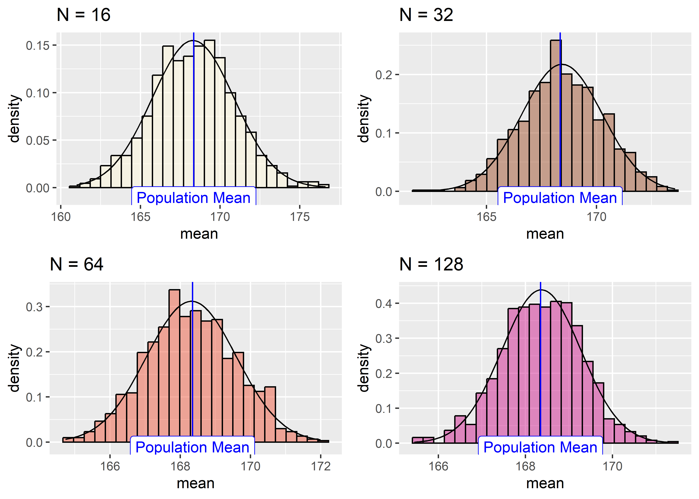

set.seed(123456) # TO get repeatable graphs!
library(tidyverse) # Data Processing in R
library(mosaic) # Our workhorse for stats, sampling
library(skimr) # Good to Examine data
library(ggformula) # Formula interface for graphs
# load the NHANES data library
library(NHANES)
library(infer) # tidy workflow for statistical inference
library(gt) # Create tidy tables to report data
library(cowplot) # ggplot themes and stacking of plots🎲 Samples, Populations, Statistics and Inference
Sampling
Central Limit Theorem
Standard Error
Confidence Intervals
Abstract
How much Slides and Tutorials
| R Tutorial | |
Radiant Tutorial | Datasets |
A population is a collection of individuals or observations we are interested in. This is also commonly denoted as a study population. We mathematically denote the population’s size using upper-case N.
A population parameter is some numerical summary about the population that is unknown but you wish you knew. For example, when this quantity is a mean like the average height of all Bangaloreans, the population parameter of interest is the population mean.
A census is an exhaustive enumeration or counting of all N individuals in the population. We do this in order to compute the population parameter’s value exactly. Of note is that as the number N of individuals in our population increases, conducting a census gets more expensive (in terms of time, energy, and money).
Populations Parameters are usually indicated by Greek Letters.
Sampling is the act of collecting a sample from the population, which we generally do when we can’t perform a census. We mathematically denote the sample size using lower case n, as opposed to upper case N which denotes the population’s size. Typically the sample size n is much smaller than the population size N. Thus sampling is a much cheaper alternative than performing a census.
A sample statistic, also known as a point estimate, is a summary statistic like a mean or standard deviation that is computed from a sample.
Why do we sample?
Because we cannot conduct a census ( not always ) — and sometimes we won’t even know how big the population is — we take samples. And we still want to do useful work for/with the population, after estimating its parameters, an act of generalizing from sample to population. So the question is, can we estimate useful parameters of the population, using just samples? Can point estimates serve as useful guides to population parameters?
This act of generalizing from sample to population is at the heart of statistical inference.
An Alliterative Mnemonic
NOTE: there is an alliterative mnemonic here: Samples have Statistics; Populations have Parameters.
| Population Parameter | Sample Statistic | |
|---|---|---|
| Mean | \(\mu\) | \(\bar{x}\) |
| Standard Deviation | \(\sigma\) | s |
| Proportion | p | \(\hat{p}\) |
| Correlation | \(\rho\) | r |
| Slope (Regression) | \(\beta_1\) | \(b_1\) |
Question
Q.1. What is the mean commute time for workers in a particular city?
A.1. The parameter is the mean commute time \(\mu\) for a population containing all workers who work in the city. We estimate it using \(\bar{x}\), the mean of the random sample of people who work in the city.
Question
Q.2. What is the correlation between the size of dinner bills and the size of tips at a restaurant?
A.2. The parameter is \(\rho\) , the correlation between bill amount and tip size for a population of all dinner bills at that restaurant. We estimate it using r, the correlation from a random sample of dinner bills.
Question
Q.3. How much difference is there in the proportion of 30 to 39-year-old residents who have only a cell phone (no land line phone) compared to 50 to 59-year-olds in the country?
A.3. The population is all citizens of the country, and the parameter is \(p_1 - p_2\), the difference in proportion of 30 to 39-year-old residents who have only a cell phone (\(p_1\)) and the proportion with the same property among all 50 to 59-year olds (\(p_2\)). We estimate it using (\(\hat{p_1} - \hat{p_2}\)), the difference in sample proportions computed from random samples taken from each group.
Sample statistics vary and in the following we will estimate this uncertainty and decide how reliable they might be as estimates of population parameters.
We will first execute some samples from a known dataset. We load up the NHANES dataset and inspect it.
| Name | NHANES |
| Number of rows | 10000 |
| Number of columns | 76 |
| _______________________ | |
| Column type frequency: | |
| factor | 31 |
| numeric | 45 |
| ________________________ | |
| Group variables | None |
Variable type: factor
| skim_variable | n_missing | complete_rate | ordered | n_unique | top_counts |
|---|---|---|---|---|---|
| SurveyYr | 0 | 1.00 | FALSE | 2 | 200: 5000, 201: 5000 |
| Gender | 0 | 1.00 | FALSE | 2 | fem: 5020, mal: 4980 |
| AgeDecade | 333 | 0.97 | FALSE | 8 | 40: 1398, 0-: 1391, 10: 1374, 20: 1356 |
| Race1 | 0 | 1.00 | FALSE | 5 | Whi: 6372, Bla: 1197, Mex: 1015, Oth: 806 |
| Race3 | 5000 | 0.50 | FALSE | 6 | Whi: 3135, Bla: 589, Mex: 480, His: 350 |
| Education | 2779 | 0.72 | FALSE | 5 | Som: 2267, Col: 2098, Hig: 1517, 9 -: 888 |
| MaritalStatus | 2769 | 0.72 | FALSE | 6 | Mar: 3945, Nev: 1380, Div: 707, Liv: 560 |
| HHIncome | 811 | 0.92 | FALSE | 12 | mor: 2220, 750: 1084, 250: 958, 350: 863 |
| HomeOwn | 63 | 0.99 | FALSE | 3 | Own: 6425, Ren: 3287, Oth: 225 |
| Work | 2229 | 0.78 | FALSE | 3 | Wor: 4613, Not: 2847, Loo: 311 |
| BMICatUnder20yrs | 8726 | 0.13 | FALSE | 4 | Nor: 805, Obe: 221, Ove: 193, Und: 55 |
| BMI_WHO | 397 | 0.96 | FALSE | 4 | 18.: 2911, 30.: 2751, 25.: 2664, 12.: 1277 |
| Diabetes | 142 | 0.99 | FALSE | 2 | No: 9098, Yes: 760 |
| HealthGen | 2461 | 0.75 | FALSE | 5 | Goo: 2956, Vgo: 2508, Fai: 1010, Exc: 878 |
| LittleInterest | 3333 | 0.67 | FALSE | 3 | Non: 5103, Sev: 1130, Mos: 434 |
| Depressed | 3327 | 0.67 | FALSE | 3 | Non: 5246, Sev: 1009, Mos: 418 |
| SleepTrouble | 2228 | 0.78 | FALSE | 2 | No: 5799, Yes: 1973 |
| PhysActive | 1674 | 0.83 | FALSE | 2 | Yes: 4649, No: 3677 |
| TVHrsDay | 5141 | 0.49 | FALSE | 7 | 2_h: 1275, 1_h: 884, 3_h: 836, 0_t: 638 |
| CompHrsDay | 5137 | 0.49 | FALSE | 7 | 0_t: 1409, 0_h: 1073, 1_h: 1030, 2_h: 589 |
| Alcohol12PlusYr | 3420 | 0.66 | FALSE | 2 | Yes: 5212, No: 1368 |
| SmokeNow | 6789 | 0.32 | FALSE | 2 | No: 1745, Yes: 1466 |
| Smoke100 | 2765 | 0.72 | FALSE | 2 | No: 4024, Yes: 3211 |
| Smoke100n | 2765 | 0.72 | FALSE | 2 | Non: 4024, Smo: 3211 |
| Marijuana | 5059 | 0.49 | FALSE | 2 | Yes: 2892, No: 2049 |
| RegularMarij | 5059 | 0.49 | FALSE | 2 | No: 3575, Yes: 1366 |
| HardDrugs | 4235 | 0.58 | FALSE | 2 | No: 4700, Yes: 1065 |
| SexEver | 4233 | 0.58 | FALSE | 2 | Yes: 5544, No: 223 |
| SameSex | 4232 | 0.58 | FALSE | 2 | No: 5353, Yes: 415 |
| SexOrientation | 5158 | 0.48 | FALSE | 3 | Het: 4638, Bis: 119, Hom: 85 |
| PregnantNow | 8304 | 0.17 | FALSE | 3 | No: 1573, Yes: 72, Unk: 51 |
Variable type: numeric
| skim_variable | n_missing | complete_rate | mean | sd | p0 | p25 | p50 | p75 | p100 | hist |
|---|---|---|---|---|---|---|---|---|---|---|
| ID | 0 | 1.00 | 61944.64 | 5871.17 | 51624.00 | 56904.50 | 62159.50 | 67039.00 | 71915.00 | ▇▇▇▇▇ |
| Age | 0 | 1.00 | 36.74 | 22.40 | 0.00 | 17.00 | 36.00 | 54.00 | 80.00 | ▇▇▇▆▅ |
| AgeMonths | 5038 | 0.50 | 420.12 | 259.04 | 0.00 | 199.00 | 418.00 | 624.00 | 959.00 | ▇▇▇▆▃ |
| HHIncomeMid | 811 | 0.92 | 57206.17 | 33020.28 | 2500.00 | 30000.00 | 50000.00 | 87500.00 | 100000.00 | ▃▆▃▁▇ |
| Poverty | 726 | 0.93 | 2.80 | 1.68 | 0.00 | 1.24 | 2.70 | 4.71 | 5.00 | ▅▅▃▃▇ |
| HomeRooms | 69 | 0.99 | 6.25 | 2.28 | 1.00 | 5.00 | 6.00 | 8.00 | 13.00 | ▂▆▇▂▁ |
| Weight | 78 | 0.99 | 70.98 | 29.13 | 2.80 | 56.10 | 72.70 | 88.90 | 230.70 | ▂▇▂▁▁ |
| Length | 9457 | 0.05 | 85.02 | 13.71 | 47.10 | 75.70 | 87.00 | 96.10 | 112.20 | ▁▃▆▇▃ |
| HeadCirc | 9912 | 0.01 | 41.18 | 2.31 | 34.20 | 39.58 | 41.45 | 42.92 | 45.40 | ▁▂▇▇▅ |
| Height | 353 | 0.96 | 161.88 | 20.19 | 83.60 | 156.80 | 166.00 | 174.50 | 200.40 | ▁▁▁▇▂ |
| BMI | 366 | 0.96 | 26.66 | 7.38 | 12.88 | 21.58 | 25.98 | 30.89 | 81.25 | ▇▆▁▁▁ |
| Pulse | 1437 | 0.86 | 73.56 | 12.16 | 40.00 | 64.00 | 72.00 | 82.00 | 136.00 | ▂▇▃▁▁ |
| BPSysAve | 1449 | 0.86 | 118.15 | 17.25 | 76.00 | 106.00 | 116.00 | 127.00 | 226.00 | ▃▇▂▁▁ |
| BPDiaAve | 1449 | 0.86 | 67.48 | 14.35 | 0.00 | 61.00 | 69.00 | 76.00 | 116.00 | ▁▁▇▇▁ |
| BPSys1 | 1763 | 0.82 | 119.09 | 17.50 | 72.00 | 106.00 | 116.00 | 128.00 | 232.00 | ▂▇▂▁▁ |
| BPDia1 | 1763 | 0.82 | 68.28 | 13.78 | 0.00 | 62.00 | 70.00 | 76.00 | 118.00 | ▁▁▇▆▁ |
| BPSys2 | 1647 | 0.84 | 118.48 | 17.49 | 76.00 | 106.00 | 116.00 | 128.00 | 226.00 | ▃▇▂▁▁ |
| BPDia2 | 1647 | 0.84 | 67.66 | 14.42 | 0.00 | 60.00 | 68.00 | 76.00 | 118.00 | ▁▁▇▆▁ |
| BPSys3 | 1635 | 0.84 | 117.93 | 17.18 | 76.00 | 106.00 | 116.00 | 126.00 | 226.00 | ▃▇▂▁▁ |
| BPDia3 | 1635 | 0.84 | 67.30 | 14.96 | 0.00 | 60.00 | 68.00 | 76.00 | 116.00 | ▁▁▇▇▁ |
| Testosterone | 5874 | 0.41 | 197.90 | 226.50 | 0.25 | 17.70 | 43.82 | 362.41 | 1795.60 | ▇▂▁▁▁ |
| DirectChol | 1526 | 0.85 | 1.36 | 0.40 | 0.39 | 1.09 | 1.29 | 1.58 | 4.03 | ▅▇▂▁▁ |
| TotChol | 1526 | 0.85 | 4.88 | 1.08 | 1.53 | 4.11 | 4.78 | 5.53 | 13.65 | ▂▇▁▁▁ |
| UrineVol1 | 987 | 0.90 | 118.52 | 90.34 | 0.00 | 50.00 | 94.00 | 164.00 | 510.00 | ▇▅▂▁▁ |
| UrineFlow1 | 1603 | 0.84 | 0.98 | 0.95 | 0.00 | 0.40 | 0.70 | 1.22 | 17.17 | ▇▁▁▁▁ |
| UrineVol2 | 8522 | 0.15 | 119.68 | 90.16 | 0.00 | 52.00 | 95.00 | 171.75 | 409.00 | ▇▆▃▂▁ |
| UrineFlow2 | 8524 | 0.15 | 1.15 | 1.07 | 0.00 | 0.48 | 0.76 | 1.51 | 13.69 | ▇▁▁▁▁ |
| DiabetesAge | 9371 | 0.06 | 48.42 | 15.68 | 1.00 | 40.00 | 50.00 | 58.00 | 80.00 | ▁▂▆▇▂ |
| DaysPhysHlthBad | 2468 | 0.75 | 3.33 | 7.40 | 0.00 | 0.00 | 0.00 | 3.00 | 30.00 | ▇▁▁▁▁ |
| DaysMentHlthBad | 2466 | 0.75 | 4.13 | 7.83 | 0.00 | 0.00 | 0.00 | 4.00 | 30.00 | ▇▁▁▁▁ |
| nPregnancies | 7396 | 0.26 | 3.03 | 1.80 | 1.00 | 2.00 | 3.00 | 4.00 | 32.00 | ▇▁▁▁▁ |
| nBabies | 7584 | 0.24 | 2.46 | 1.32 | 0.00 | 2.00 | 2.00 | 3.00 | 12.00 | ▇▅▁▁▁ |
| Age1stBaby | 8116 | 0.19 | 22.65 | 4.77 | 14.00 | 19.00 | 22.00 | 26.00 | 39.00 | ▆▇▅▂▁ |
| SleepHrsNight | 2245 | 0.78 | 6.93 | 1.35 | 2.00 | 6.00 | 7.00 | 8.00 | 12.00 | ▁▅▇▁▁ |
| PhysActiveDays | 5337 | 0.47 | 3.74 | 1.84 | 1.00 | 2.00 | 3.00 | 5.00 | 7.00 | ▇▇▃▅▅ |
| TVHrsDayChild | 9347 | 0.07 | 1.94 | 1.43 | 0.00 | 1.00 | 2.00 | 3.00 | 6.00 | ▇▆▂▂▂ |
| CompHrsDayChild | 9347 | 0.07 | 2.20 | 2.52 | 0.00 | 0.00 | 1.00 | 6.00 | 6.00 | ▇▁▁▁▃ |
| AlcoholDay | 5086 | 0.49 | 2.91 | 3.18 | 1.00 | 1.00 | 2.00 | 3.00 | 82.00 | ▇▁▁▁▁ |
| AlcoholYear | 4078 | 0.59 | 75.10 | 103.03 | 0.00 | 3.00 | 24.00 | 104.00 | 364.00 | ▇▁▁▁▁ |
| SmokeAge | 6920 | 0.31 | 17.83 | 5.33 | 6.00 | 15.00 | 17.00 | 19.00 | 72.00 | ▇▂▁▁▁ |
| AgeFirstMarij | 7109 | 0.29 | 17.02 | 3.90 | 1.00 | 15.00 | 16.00 | 19.00 | 48.00 | ▁▇▂▁▁ |
| AgeRegMarij | 8634 | 0.14 | 17.69 | 4.81 | 5.00 | 15.00 | 17.00 | 19.00 | 52.00 | ▂▇▁▁▁ |
| SexAge | 4460 | 0.55 | 17.43 | 3.72 | 9.00 | 15.00 | 17.00 | 19.00 | 50.00 | ▇▅▁▁▁ |
| SexNumPartnLife | 4275 | 0.57 | 15.09 | 57.85 | 0.00 | 2.00 | 5.00 | 12.00 | 2000.00 | ▇▁▁▁▁ |
| SexNumPartYear | 5072 | 0.49 | 1.34 | 2.78 | 0.00 | 1.00 | 1.00 | 1.00 | 69.00 | ▇▁▁▁▁ |
Let us create a NHANES (sub)-dataset without duplicated IDs and only adults:
An “Assumed” Population
For now, we will treat this dataset as our Population. So each variable in the dataset is a population for that particular quantity/category, with appropriate population parameters such as means, sd-s, and proportions.
Let us calculate the population parameters for the Height data from our “assumed” population:
# NHANES_adult is assumed population
pop_mean_height <- mean(~ Height, data = NHANES_adult)
pop_sd_height <- sd(~ Height, data = NHANES_adult)
pop_mean_height[1] 168.3497pop_sd_height[1] 10.15705
Now, we will sample ONCE from the NHANES Height variable. Let us take a sample of sample size 50. We will compare sample statistics with population parameters on the basis of this ONE sample of 50:
sample_height <- sample(NHANES_adult, size = 50) %>%
select(Height)
sample_height
sample_mean_height <- mean(~ Height, data = sample_height)
sample_mean_height
# Plotting the histogram of this sample
sample_height %>%
gf_histogram(~ Height, bins = 10) %>%
gf_vline(xintercept = sample_mean_height,
color = "red") %>%
gf_vline(xintercept = pop_mean_height,
colour = "blue") %>%
gf_label(7 ~ (pop_mean_height + 8),
label = "Population Mean Height",
color = "blue") %>%
gf_label(7 ~ (sample_mean_height - 8),
label = "Sample Mean Height", color = "red") %>%
gf_theme(theme_classic())[1] 165.866
OK, so the sample_mean_height is not too far from the pop_mean_height. Is this always true? Let us check: we will create 500 samples each of size 50. And calculate their mean as the sample statistic, giving us a data frame containing 500 sample means. We will then see if these 500 means lie close to the pop_mean_height:
sample_height_500 <- do(500) * {
sample(NHANES_adult, size = 50) %>%
select(Height) %>%
summarise(
sample_mean_500 = mean(Height),
sample_min_500 = min(Height),
sample_max_500 = max(Height))
}
head(sample_height_500)
dim(sample_height_500)
sample_height_500 %>%
gf_point(.index ~ sample_mean_500, color = "red",
title = "Sample Means are close to the Population Mean",
subtitle = "Sample Means are Random!") %>%
gf_segment(
.index + .index ~ sample_min_500 + sample_max_500,
color = "red",
size = 0.3,
alpha = 0.3,
ylab = "Sample Index (1-500)",
xlab = "Sample Means"
) %>%
gf_vline(xintercept = ~ pop_mean_height,
color = "blue") %>%
gf_label(-15 ~ pop_mean_height, label = "Population Mean",
color = "blue") %>%
gf_theme(theme = theme_classic)[1] 500 5
Sample Means are a Random Variable
The sample-means are a random variable! And hence they will have a mean and sd. Do not get confused ;-D
The sample_means (red dots), are themselves random because the samples are random, of course. It appears that they are generally in the vicinity of the pop_mean (blue line).
Since the sample-means are themselves random variables, let’s plot the distribution of these 500 sample-means themselves, called a distribution of sample-means. We will also plot the position of the population mean pop_mean_height parameter, the mean of the Height variable.
sample_height_500 %>%
gf_dhistogram(~ sample_mean_500,bins = 30, xlab = "Height") %>%
gf_vline(xintercept = pop_mean_height,
color = "blue") %>%
gf_label(0.01 ~ pop_mean_height,
label = "Population Mean",
color = "blue") %>%
gf_theme(theme_classic())
# How does this **distribution of sample-means** compare with the
# overall distribution of the population?
#
sample_height_500 %>%
gf_dhistogram(~ sample_mean_500, bins = 30,xlab = "Height") %>%
gf_vline(xintercept = pop_mean_height,
color = "blue") %>%
gf_label(0.01 ~ pop_mean_height,
label = "Population Mean",
color = "blue") %>%
## Add the population histogram
gf_histogram(~ Height, data = NHANES_adult,
alpha = 0.2, fill = "blue",
bins = 30) %>%
gf_label(0.025 ~ (pop_mean_height + 20),
label = "Population Distribution", color = "blue") %>%
gf_theme(theme_classic())

Distributions
We see in the Figure above that
- the distribution of sample-means is centered around the
pop_mean. - That the standard deviation of the distribution of sample means is less than that of the original population. But exactly what is it?
- And what is the kind of distribution?
One more experiment.
Now let’s repeatedly sample Height and compute the sample mean, and look at the resulting histograms and Q-Q plots. (Q-Q plots check whether a certain distribution is close to being normal or not.)
We will use sample sizes of c(16, 32, 64, 128) and generate 1000 samples each time, take the means and plot these 1000 means:
set.seed(12345)
samples_height_16 <- do(1000) * mean(resample(NHANES_adult$Height, size = 16))
samples_height_32 <- do(1000) * mean(resample(NHANES_adult$Height, size = 32))
samples_height_64 <- do(1000) * mean(resample(NHANES_adult$Height, size = 64))
samples_height_128 <- do(1000) * mean(resample(NHANES_adult$Height, size = 128))
# Quick Check
head(samples_height_16)Now let’s create separate Q-Q plots for the different sample sizes.
# Now let's create separate Q-Q plots for the different sample sizes.
#
p1 <- gf_qq( ~ mean,data = samples_height_16,
title = "N = 16",
color = "cornsilk") %>%
gf_qqline()
p2 <- gf_qq( ~ mean,data = samples_height_32,
title = "N = 32",
color = "sienna") %>%
gf_qqline()
p3 <- gf_qq( ~ mean,data = samples_height_32,
title = "N = 64",
color = "tomato2") %>%
gf_qqline()
p4 <- gf_qq( ~ mean,data = samples_height_128,
title = "N = 128",
color = "violetred") %>%
gf_qqline()
cowplot::plot_grid(p1, p2, p3, p4)
Let us plot their individual histograms to compare them:
# Let us overlay their individual histograms to compare them:
p5 <- gf_dhistogram(~ mean,
data = samples_height_16,
color = "black",
fill = "cornsilk",title = "N = 16") %>%
gf_fitdistr() %>%
gf_vline(xintercept = pop_mean_height,
color = "blue") %>%
gf_label(-0.01 ~ pop_mean_height,
label = "Population Mean",
color = "blue")
p6 <- gf_dhistogram(~ mean,
data = samples_height_32,
color = "black",
fill = "sienna",title = "N = 32") %>%
gf_fitdistr() %>%
gf_vline(xintercept = pop_mean_height,
color = "blue") %>%
gf_label(-.01 ~ pop_mean_height,
label = "Population Mean",
color = "blue")
p7 <- gf_dhistogram(~ mean,
data = samples_height_64 ,
na.rm = TRUE,
color = "black",
fill = "tomato2",title = "N = 64") %>%
gf_fitdistr() %>%
gf_vline(xintercept = pop_mean_height,
color = "blue") %>%
gf_label(-.01 ~ pop_mean_height,
label = "Population Mean", color = "blue")
p8 <- gf_dhistogram(~ mean,
data = samples_height_128,
na.rm = TRUE,
color = "black",
fill = "violetred",title = "N = 128") %>%
gf_fitdistr() %>%
gf_vline(xintercept = pop_mean_height,
color = "blue") %>%
gf_label(-.01 ~ pop_mean_height,
label = "Population Mean", color = "blue")
cowplot::plot_grid(p5,p6,p7,p8)
And if we overlay the histograms:

The QQ plots show that the results become more normally distributed (i.e. following the straight line) as the samples get larger. From the histograms we learn that the sample-means are normally distributed around the population mean. This feels intuitively right because when we sample from the population, many values will be close to the population mean, and values far away from the mean will be increasingly scarce.
Let us calculate the mean of the sample-means:
mean(~ mean, data = samples_height_16)
mean(~ mean, data = samples_height_32)
mean(~ mean, data = samples_height_64)
mean(~ mean, data = samples_height_128)
pop_mean_height[1] 168.306
[1] 168.4349
[1] 168.3184
[1] 168.366
[1] 168.3497And the sample sds:
sd(~ mean, data = samples_height_16)
sd(~ mean, data = samples_height_32)
sd(~ mean, data = samples_height_64)
sd(~ mean, data = samples_height_128)[1] 2.578355
[1] 1.834979
[1] 1.280014
[1] 0.9096318
Central Limit Theorem
This is the Central Limit Theorem (CLT)
- the sample-means are normally distributed around the population mean.
- the sample-means become “more normally distributed” with sample length, as shown by the (small but definite) improvements in the Q-Q plots with sample-size.
- the sample-mean distributions narrow with sample length, i.e the
sddecreases with increasing sample size. - This is regardless of the distribution of the population parameter itself.1
As we saw above, the standard deviations of the sample-mean distributions reduce with sample size. In fact their SDs are defined by:
sd = pop_sd/sqrt(sample_size)2 where sample-size here is one of c(16,32,64,128)
The standard deviation of the sample-mean distribution is called the Standard Error. This statistic derived from the sample, will help us infer our population parameters with a precise estimate of the uncertainty involved.
\[ Standard\ Error\ \pmb {se} = \frac{population\ sd}{\sqrt[]{sample\ size}} \\\ \pmb {se} = \frac{\sigma}{\sqrt[]{n}} \]
In our sampling experiments, the Standard Errors evaluate to:
pop_sd_height <- sd(~ Height, data = NHANES_adult)
pop_sd_height/sqrt(16)
pop_sd_height/sqrt(32)
pop_sd_height/sqrt(64)
pop_sd_height/sqrt(128)[1] 2.539262
[1] 1.795529
[1] 1.269631
[1] 0.8977646As seen, these are identical to the Standard Deviations of the individual sample-mean distributions.
When we work with samples, we want to be able to speak with a certain degree of confidence about the population mean, based on the evaluation of one sample mean,not a whole large number of them. Give that sample-means are normally distributed around the population means, we can say that \(68\%\) of all possible sample-mean lie within \(\pm SE\) of the population mean; and further that \(95 \%\) of all possible sample-mean lie within \(\pm 2*SE\) of the population mean.
These two intervals \(sample.mean \pm SE\) and \(sample.mean \pm 1.5*SE\) are called the confidence intervals for the population mean, at levels \(68\%\) and \(95 \%\) probability respectively.
Thus if we want to estimate a population parameter:
we take one random sample from the population
we calculate the estimate from the sample
we calculate the sample-sd
we calculate the Standard Error as \(\frac{sample-sd}{\sqrt[]{n}}\)
-
we calculate 95% confidence intervals for the population parameter based on the formula
\(CI_{95\%}= sample.mean \pm 2*SE\).
Since Standard Error decreases with sample size, we need to make our sample of adequate size.( \(n=30\) seems appropriate in most cases. Why?)
Diez, David M & Barr, Christopher D & Çetinkaya-Rundel, Mine, OpenIntro Statistics. https://www.openintro.org/book/os/
Stats Test Wizard. https://www.socscistatistics.com/tests/what_stats_test_wizard.aspx
Diez, David M & Barr, Christopher D & Çetinkaya-Rundel, Mine: OpenIntro Statistics. Available online https://www.openintro.org/book/os/
Måns Thulin, Modern Statistics with R: From wrangling and exploring data to inference and predictive modelling http://www.modernstatisticswithr.com/
Jonas Kristoffer Lindeløv, Common statistical tests are linear models (or: how to teach stats) https://lindeloev.github.io/tests-as-linear/
CheatSheet https://lindeloev.github.io/tests-as-linear/linear_tests_cheat_sheet.pdf
Common statistical tests are linear models: a work through by Steve Doogue https://steverxd.github.io/Stat_tests/
Jeffrey Walker “Elements of Statistical Modeling for Experimental Biology”. https://www.middleprofessor.com/files/applied-biostatistics_bookdown/_book/
Adam Loy, Lendie Follett & Heike Hofmann (2016) Variations of Q–Q Plots: The Power of Our Eyes!, The American Statistician, 70:2, 202-214, DOI: 10.1080/00031305.2015.1077728
Footnotes
The `Height` variable seems to be normally distributed at population level. We will try other non-normal population variables as an exercise in the tutorials.↩︎
Once
sample size = population, we have complete access to the population and there is no question of estimation error! Sosample_sd = pop_sd!↩︎